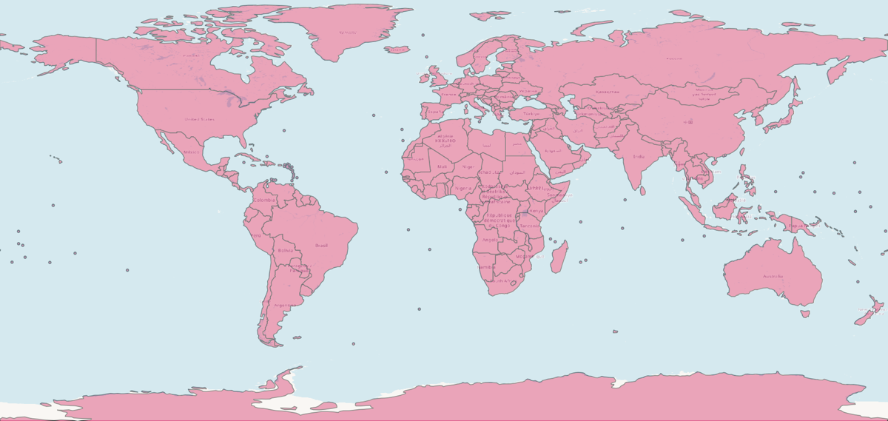

A hand-corrected world boundary shapefile that restores the small island nations and territories standard basemaps simplify away — built because no off-the-shelf world map actually suited disease-distribution mapping work.

Standard world-boundary datasets, simplified for lightweight rendering, routinely drop or under-represent micro-states and dependent territories — Pacific atolls, Caribbean island nations, European micro-states like Monaco and Liechtenstein, Gibraltar, Andorra, and similar small or contested territories. For a travel-medicine physician mapping malaria, yellow fever, and other mosquito-borne disease distributions, that's exactly where risk data needs to render — the base map was silently dropping the populations the visualization was meant to show. No existing world map suited that specific need, so this one was built to use directly.
Built in QGIS from the Natural Earth world-countries dataset, then hand-corrected feature by feature: adding back omitted micro-states, territories, and islands; separating administrative units that were nested inside larger countries where that hid them (French Guiana pulled out from France, for example); resolving overlapping/hidden features; and adding an exaggerated marker for at least one nation too small to survive standard simplification. Every feature — including ones without a standard country code — was given a stable join key so the shapefile joins cleanly onto other datasets (like the CDC Yellow Book country data behind the Yellow Fever & Malaria dashboard), with geometry simplified for lightweight rendering.
A versioned, openly licensed personal utility with an iterative changelog of real-use fixes — consistent with a tool that gets reused rather than a one-off export.